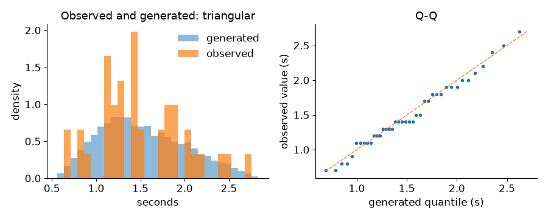

Choosing Inputs compared four candidates for the packing time by hand and chose the 40 times measured at the bench. desflow can fit every distribution family to those times and say which fits best. This page asks: which supported distribution fits the 40 packing times, and does the choice change the busy hour's answer?
What You Add
desflow fit, or fit_column in Python, on the 40 packing times, and the fitted settings in the busy hour of Trusting Results in place of the times themselves. Fitting needs the fit extra: pip install "desflow[fit]".
Fit the Packing Times
Fit the times, which are in seconds and cannot be below 0:
packing_times.csv has a column packing_seconds with the 40 times; desflow examples get fitting downloads it as fitting/packing_times.csv. --out writes the best candidate's settings, and --plot draws the data against it.
# The 40 packing times, in seconds; none can be below 0result=fit_column(MEASURED,unit="s",lower=0)print(result.text())# every candidate, its status and diagnostics
# The 40 packing times, in seconds; none can be below 0result=fit_column(MEASURED,unit="s",lower=0)print(result.text())# every candidate, its status and diagnostics
Each family is fitted by maximum likelihood, which chooses the parameters under which the measured values are most probable, then checked and given one row:
40 rows: 40 used, 0 missing, 0 invalid
family status AIC KS p (approx.) parameters or reason
exponential rejected its std is 1.5, the data's is 0.4832: more than 25% apart
normal fitted 59.33 0.157 0.2504 mean=1.5, std=0.483218 (can draw below the lower bound 0)
lognormal fitted 57.33 0.09406 0.8385 mean=1.50251, std=0.511854
truncated_normal fitted 59.25 0.1558 0.2579 mean=1.49836, std=0.48579, low=0
constant skipped the values are not all equal
uniform fitted 59.45 0.225 0.02923 low=0.7, high=2.7
triangular * fitted 56.68 0.1258 0.511 low=0.546332, mode=1.2, high=2.83766
gamma fitted 56.79 0.1157 0.6165 shape=9.55777, scale=0.15694
weibull fitted 58.99 0.1502 0.2972 shape=3.33522, scale=1.67203
empirical fitted values: 40 numbers
* best: triangular
AIC, Akaike's information criterion, scores how likely the data is under the fitted family, with a penalty for each parameter; lower is better. KS is the largest gap between the data's cumulative share and the family's, and its p-value is approximate, because the family was fitted to the same data. exponential was rejected: its standard deviation equals its mean, 1.5 seconds, more than three times the data's. constant was skipped, because the times are not all equal. normal fitted, but it can draw below 0, so it is not chosen while a family that stays within the bounds fits. empirical, the 40 times themselves, is always offered. The lowest AIC is the triangular, marked best, with gamma 0.11 behind it.
Look at the Fit
--plot, or result.plot("fit.png"), draws the data against 10,000 values drawn from the best fit through desflow's Sampler, as a run draws them:

On the left, the data and the generated values cover the same range. On the right, each sorted packing time is plotted against the generated value at the same quantile; points on the diagonal mean the two agree. Forty values cannot show much more than that.
# Fitted by desflow fit from packing_times.csv, column packing_seconds: triangular, from 40 values in s, written in seconds.dist:triangularlow:0.546332mode:1.2high:2.83766
params=SimParameter(sim_id="Shop",arrival={"orders":DistributionConfig(dist="exponential",rate=1.8)},# The best fit's settings: dist="triangular", low, mode and highservice={"packing":DistributionConfig(**packing)},resources={"packers":CapacityConfig(current_cap=3,max_cap=10)},)
result.settings() returns the best candidate's settings and result.settings("gamma") another's, with the same six significant digits the file holds, so a script and a blueprint that use one fit draw the same values.
Does the Choice Matter?
Run the busy hour 40 times with each, as in Trusting Results. In YAML, desflow run fit_the_inputs.yaml --replications 40 --measure tasks.pack_order.wait_mean runs the best fit; --candidates gamma on desflow fit writes the gamma fit instead. The mean wait, with the 95% half-width:
Packing time
Mean (s)
Mean wait (s)
triangular, the lowest AIC
1.53
2.93 ± 0.25
gamma
1.50
2.33 ± 0.19
the 40 times
1.50
2.32 ± 0.20
Result
Which supported distribution fits the 40 packing times? The triangular has the lowest AIC, but the gamma fits almost as well, 0.11 behind, and by a common rule of thumb an AIC difference below 2 does not tell two fits apart. The choice does change the answer: the triangular gives a mean wait of 2.93 ± 0.25 seconds, the gamma 2.33 ± 0.19, which agrees with the 2.32 ± 0.20 of the 40 times. So the gamma is the better choice for this question.
Why It Works
The triangular's mean is (0.546 + 1.2 + 2.838) ÷ 3 = 1.53 seconds, 2% above the data's 1.50, while the gamma keeps the data's mean exactly, as shape × scale = 9.558 × 0.157 = 1.50. With the packers busy 90% of the time, 2% more packing is a large share of their spare time, so the wait grows far more than 2%. Input Fitting describes every option and outcome.
# The Fit the Inputs tutorial: the busy hour, with a packing time fitted to the data.# Fit, then run it:# desflow fit packing_times.csv --column packing_seconds --lower 0 --out fitted/packing.yaml# desflow run fit_the_inputs.yaml# 40 replications: desflow run fit_the_inputs.yaml --replications 40 --measure tasks.pack_order.wait_meansimulation:sim_id:Shopfactor:0random_seed:42warmup:2 minresources:packers:{current_cap:3, max_cap:10}arrivals:orders:{dist:exponential, rate:1.8, spawn:pack_order}services:# The best fit of the 40 packing times, as desflow fit wrote itpacking:!includefitted/packing.yamltasks:pack_order:service:packingresource:packerspayload:{event_type:order_packed}stats:typicalrun:until:1 h
"""The Fit the Inputs tutorial: which distribution fits the 40 packing times? builder.Fits the 40 packing times measured at the bench to every family, prints the tableof candidates, then runs the busy hour of Trusting Results 40 times with the bestfit, with the gamma fit and with the 40 times themselves, and prints the mean waitof each."""importloggingfromdesflowimportSimulationContext,fit_column,replicatefromtrusting_resultsimportMEASURED# The imported model logs at INFO; replications log only their warningslogging.getLogger("desflow").setLevel(logging.WARNING)deffitted():"""Every family fitted to the measured times."""# The 40 packing times, in seconds; none can be below 0result=fit_column(MEASURED,unit="s",lower=0)print(result.text())# every candidate, its status and diagnosticsreturnresultdefshop(packing=None)->SimulationContext:"""The busy hour; `packing` is a fit's settings, or None for the 40 times."""ifpackingisNone:packing={"dist":"empirical","values":MEASURED}app=(SimulationContext(sim_id="Shop",factor=0,random_seed=42,warmup="2 min").add_resource("packers",current_cap=3,max_cap=10).add_arrival("orders",dist="exponential",rate=1.8)# The best fit's settings: dist="triangular", low, mode and high.add_service("packing",**packing).with_stats("typical"))@app.task(service_id="packing",resource_id="packers")defpack_order(task_id:int):return{"event_type":"order_packed"}@app.arrival_loop("orders")deforder_generator(context:SimulationContext):task_id=0whileTrue:order=yieldcontext.wait_for_arrival("orders")context.spawn(pack_order(task_id,entity=order))task_id+=1returnappdefmean_waits(result)->dict:"""The mean wait over 40 replications, with each packing distribution."""choices={"triangular":result.settings(),"gamma":result.settings("gamma"),"empirical":None,}return{name:replicate(lambda:shop(packing),40,seed=42,until="1 h",measures=["tasks.pack_order.wait_mean"],).summary[0]forname,packinginchoices.items()}if__name__=="__main__":forname,rowinmean_waits(fitted()).items():print(f"{name}: mean wait {row['mean']:.2f} ± {row['half_width']:.2f} s")
It imports from trusting_results.py, which is in the full files of Trusting Results.
"""The Fit the Inputs tutorial: which distribution fits the 40 packing times? low-level.Fits the 40 packing times measured at the bench to every family, prints the tableof candidates, then runs the busy hour of Trusting Results 40 times with the bestfit, with the gamma fit and with the 40 times themselves, and prints the mean waitof each."""importloggingfromdesflowimport(CapacityConfig,DistributionConfig,DynamicResource,LowLevelModel,SimParameter,fit_column,replicate,)fromtrusting_results_low_levelimportMEASURED,WARMUP,order_generator# The imported model logs at INFO; replications log only their warningslogging.getLogger("desflow").setLevel(logging.WARNING)deffitted():"""Every family fitted to the measured times."""# The 40 packing times, in seconds; none can be below 0result=fit_column(MEASURED,unit="s",lower=0)print(result.text())# every candidate, its status and diagnosticsreturnresultdefbusy_hour(packing):"""The busy hour's model, with a packing distribution's settings."""params=SimParameter(sim_id="Shop",arrival={"orders":DistributionConfig(dist="exponential",rate=1.8)},# The best fit's settings: dist="triangular", low, mode and highservice={"packing":DistributionConfig(**packing)},resources={"packers":CapacityConfig(current_cap=3,max_cap=10)},)defmodel(env,sampler):env.registry.register_sim_parameter(params)packers=DynamicResource(env,"Shop","packers")env.process(order_generator(env,sampler,packers))returnLowLevelModel(model,sim_id="Shop")defmean_waits(result)->dict:"""The mean wait over 40 replications, with each packing distribution."""choices={"triangular":result.settings(),"gamma":result.settings("gamma"),"empirical":{"dist":"empirical","values":MEASURED},}return{name:replicate(busy_hour(packing),40,seed=42,until=3600,warmup=WARMUP,measures=["tasks.pack_order.wait_mean"],).summary[0]forname,packinginchoices.items()}if__name__=="__main__":forname,rowinmean_waits(fitted()).items():print(f"{name}: mean wait {row['mean']:.2f} ± {row['half_width']:.2f} s")
It imports from trusting_results_low_level.py, which is in the full files of Trusting Results.
Next, Stock asks what happens when the shop runs out of boxes.